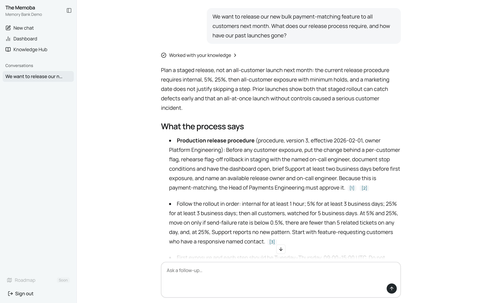
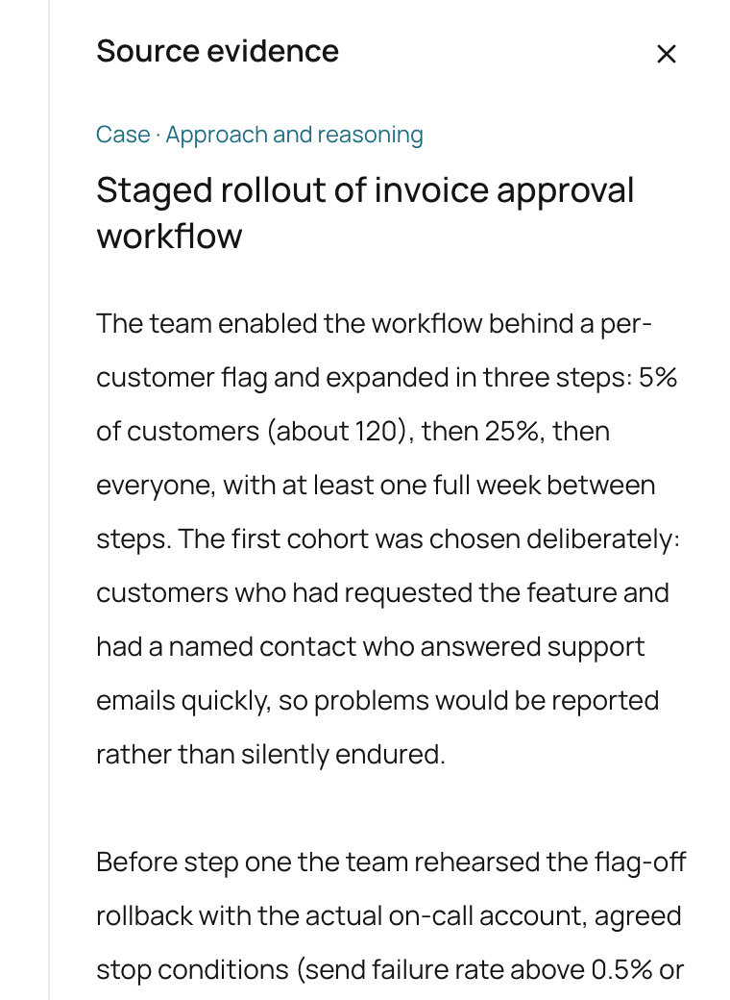
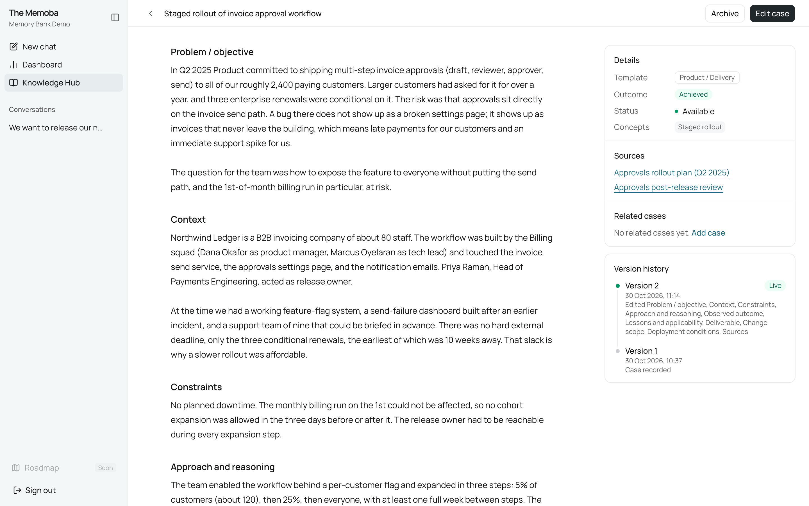
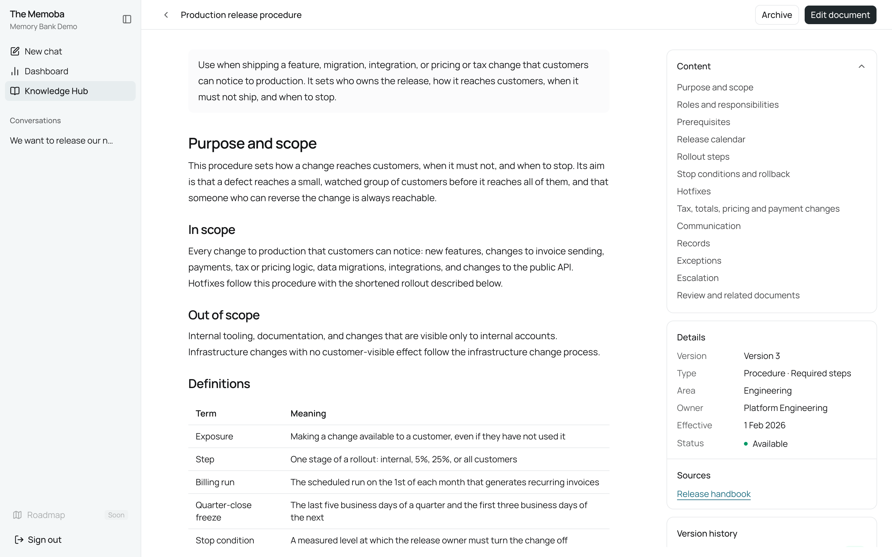
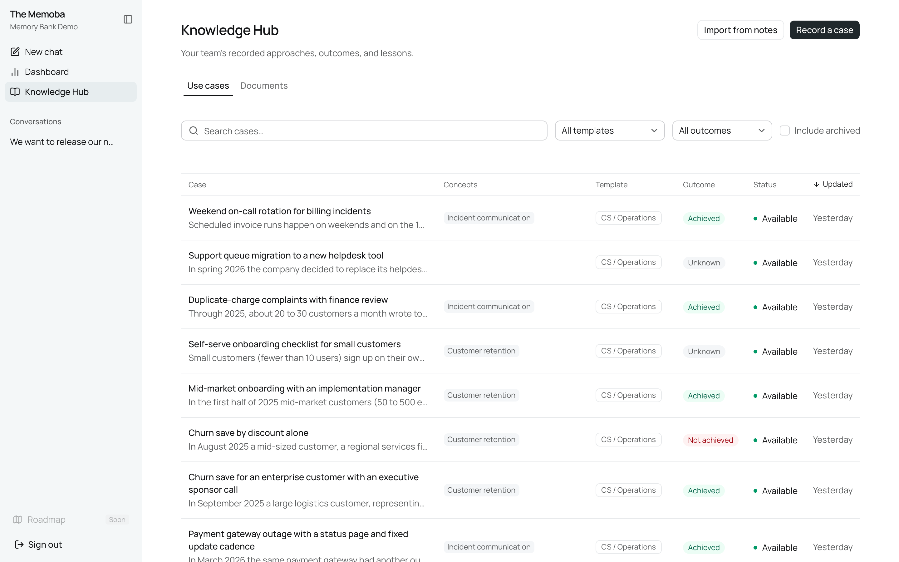
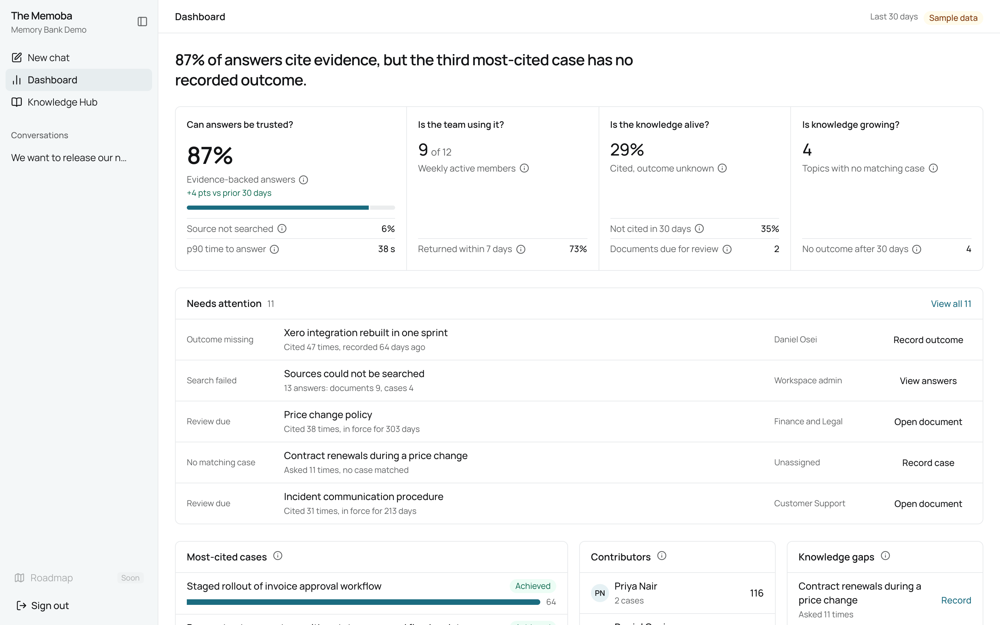
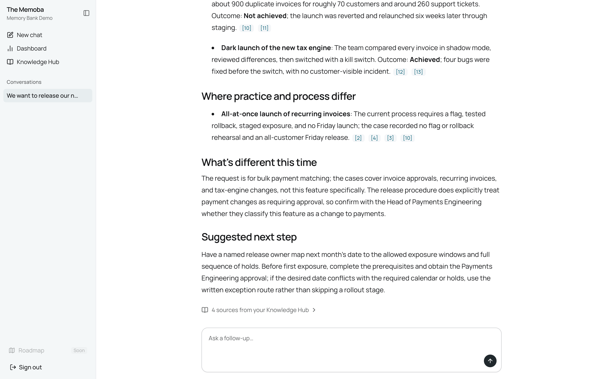

Your team already solved this. Nobody remembers where.
Memoba answers questions from your team's recorded cases and process documents, and cites the sources it read.
Open the demo

A saved answer from the demo workspace. Open any citation to read the section behind it.
The ticket survives. The reasoning doesn't.
The conditions
No feature flag, no rollback rehearsal, no weekend on-call owner, and a Friday afternoon release.
The road not taken
A 5% start was discussed and rejected, because the feature had to be visible during a keynote.
What really happened
About 900 duplicate invoices for roughly 70 customers, found through a customer email on Saturday evening.
What to do next time
A fixed date is a reason to cut scope, not to skip a staged rollout.
Cases say what happened.
A case records the problem, conditions, approach, and the outcome someone actually observed.

Documents say what is required.
A document is the versioned rule in force today, with its owner and effective date.

Follow one question through the engine.
The model chooses what to search and read. The application holds the limits, and records what each source really returned.
Question: What does our release process require, and how have our past launches gone?
See what the team knows, and where it's thin.

Knowledge Hub
Every case and process document in one place, with its outcome and status.

Dashboard
Shows which answers lean on evidence and which cases need an outcome. The figures in this demo are labelled sample data.
When they differ, you get both sides.

A case is never called a violation.
Memoba reports the difference and cites both sides.
Advice stays advice.
A generated brief never becomes an observed outcome.
A failed search is never "no precedent".
A source that could not be searched is reported as unchecked.
A citation shows where a claim came from.
It proves the agent read that section. It doesn't prove the section supports the claim, so open it and judge.